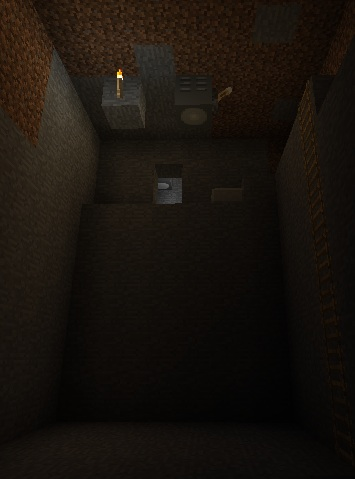
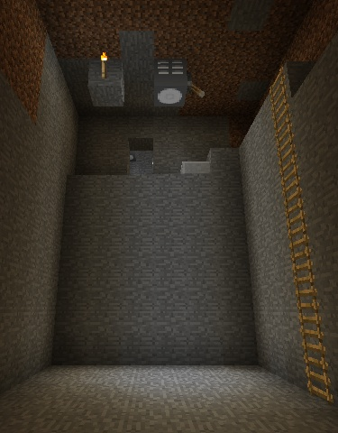

|  |  |
| The torch at the top doesn't do much for the
light level at the bottom... |
...but turn on a floodlight, and the floor is
bathed in splendiforous brilliance! |
| Minecraft Version | Greg's Lighting | ModLoader Version |
Forge Version |
| 1.2.5 |
GregsLighting-1.2-mc1.2.5.zip |
1.2.5 | 3.0.1 |
| N/A |
3.3.7 |
Client
Copy GregsLighting-Client.jar into your mods folder.
Server
Copy GregsLighting-Server.jar into the server's mods folder.
Carbide Floodlight
IC2 Electric Floodlight
GregsLighting-1.2-mc1.2.5-Source.zip
greg.ewing@canterbury.ac.nz
| Minecraft Version | Greg's Lighting | ModLoader Version |
Forge Version |
| 1.2.5 |
GregsLighting-1.1-mc1.2.5.zip |
1.2.5 | 3.0.1 |